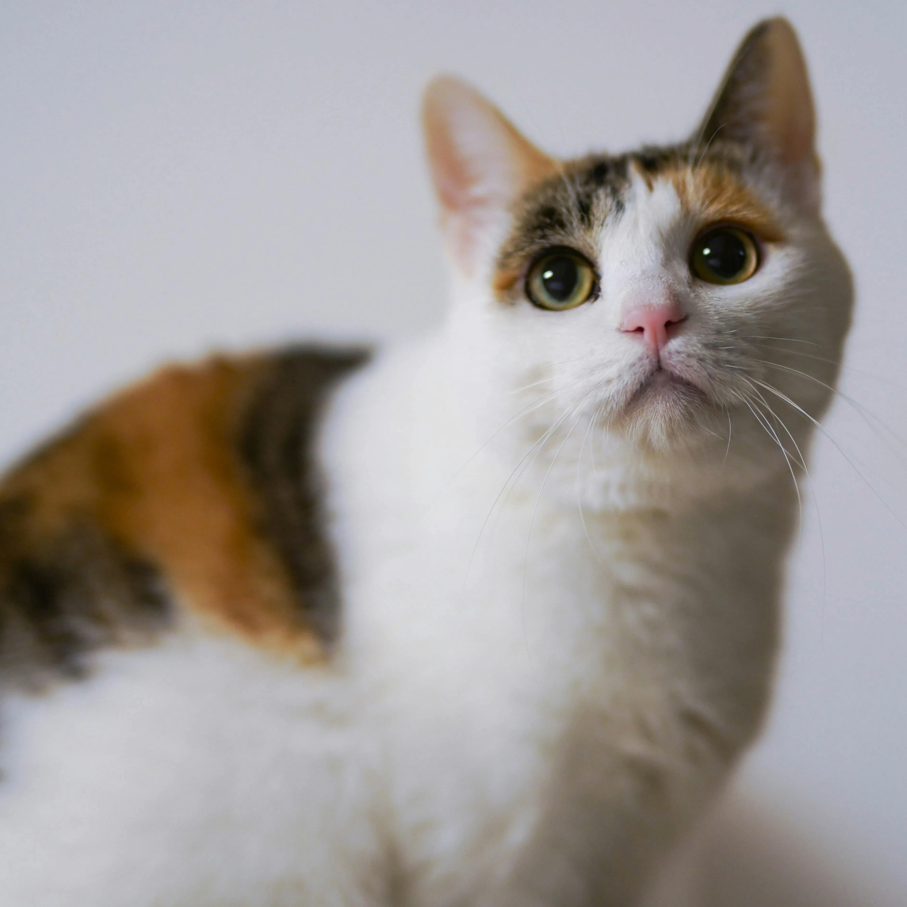
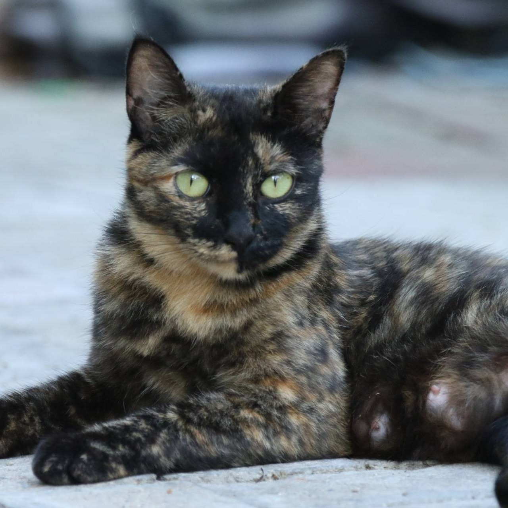

玳瑁貓和三色貓（三花貓）是指貓的身上同時有紅（橘）色、黑色和白色的色塊，而它也會有虎斑、稀釋、重點色和毛尖色的變化。
從貓的遺傳學上來說，決定毛色遺傳的基因是位於X染色體，而在Y染色體上並沒有任何毛色的基因，而雌貓的性染色體是XX，如果其中一條帶有褐黑色素、另一條帶有真黑色素的話，那這兩種色素就會在貓的身上參雜成為玳瑁色；假設產生白色的基因也發生作用的話，那麼就會是身上有白色的補丁，或是有大塊白色的玳瑁白貓、三色貓。

三花貓

玳瑁貓
 橘貓小知識
橘貓小知識
就像玳瑁跟三花大多是母貓一樣，大約 2/3 的橘貓都是公的，母橘貓則比較少見，因為公貓（XY）只要一條 X 染色體帶橘色基因就全身橘，母貓（XX）則需要兩條 X 都帶橘基因才能是全橘貓，所以母橘貓機率低很多。